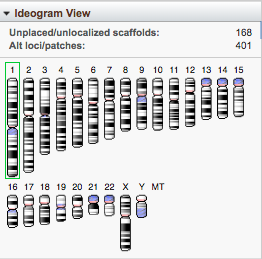
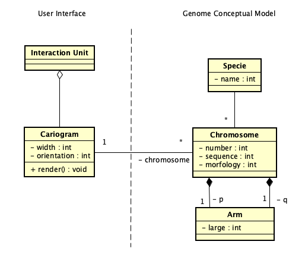
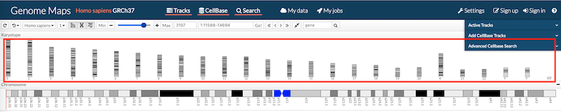
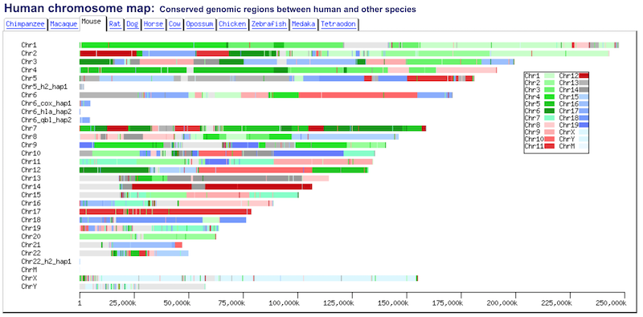

Cariograma

Problema
Contexto
A partir de los datos de la secuencia genética del ADN de una especie, el investigador quiere identificar visualmente la organización cromosómica. En estudios citogenéticos, los especialistas del dominio están familiarizados con el uso de cariotipos para identificar anomalías cromosómicas como causa de malformaciones o de enfermedad.
Fuerzas
El cariotipo y su nomenclatura ISCN (International System for Human Cytogenetics Nomenclatura) se convierte en un lenguaje estándar para los investigadores en el área genómica.
La gran cantidad de datos de la secuencia de ADN dificulta visualizar el complejo cromosómico.
El usuario necesita visualizar una estructura de organización de alto nivel de la secuencia de ADN.
Solución
Presentar un mapa citogenético o cariograma de una especie seleccionada. El cariograma es la representación gráfica del cariotipo. Para lo cual:
Agrega un componente visual (panel) a la unidad de interacción, el cual representará el cariograma.
Definir el tamaño (ancho y largo) del contenedor y su orientación. La orientación define si el cariograma se presenta de manera horizontal o vertical. El tamaño del contenedor define la escala de dibujo.
Por cada cromosoma de la especie seleccionada, dibuja el cromosoma en el contenedor considerando un factor de escala para escalar el tamaño de su secuencia de ADN (número de bases de la secuencia) al tamaño del contenedor.
Ordenar los cromosomas ascendentemente por su número, dejando los cromosomas XY, si se incluyen, al final del conjunto de cromosomas.
Opcionalmente, si los datos del cromosoma definen el centrómero, brazo largo (q) y corto (p) entonces:
Dibujar los cromosomas con el brazo corto (“p”) hacia arriba y el brazo largo ("q") hacia abajo.
La forma (morfología) del cromosoma respecto a su centrómero puede categorizarlo en cromosoma de tipo; metacéntricos, submetacéntrico, acrocéntrico o telocéntrico.
tamaño (desde los más grandes hasta a las más pequeños, en relación al número de bases de su secuencia de ADN).
El patrón
Ideograma aplicado a este patrón, permite reconocer los cromosomas dentro del conjunto. Este patrón, junto con los
tracks se convierte en un mecanismo
“detalle bajo demanda" que facilita la navegación por la secuencia genética.
Estructura

Patrones relacionados
Ejemplos
La figura 1 muestra una porción de la interfaz de usuario de Genome Maps, donde se muestra la implementación del patrón cariograma (recuadro en color rojo). El cariograma, dispuesto horizontalmente y en una sola fila, representa los 23 pares de cromosomas de la especie humana: 22 pares de cromosomas autonomas y un par de cromosomas gonosomas ( X y o Y, siendo XX para el sexo femenino, y XY para el sexo masculino).

La figura 2 presenta la interfaz de la aplicación G-compass que muestra el cariograma de diferentes especies, en el ejemplo se muestra el cariograma de la especie ratón.

Otros ejemplos se puede encontrar en las aplicaciones:
Cromátida.- Las dos cadenas paralelas de cromatina conectadas en el centrómero que constituyen el cromosoma después de la replicación del ADN.[3]
Centrómero.- Lugar o punto en que se unen las fibras del huso acromático con el cromosoma en la metafase; para que en la anfase los cromosomas sean conducidos hacia los polos. En cromosomas normales, la posición del centrómero siempre es la misma y puede, por su localización, formar dos brazos iguales o dos brazos desiguales en cada cromosoma. Al centrómero también se le designa cinetócoro [2].
Bibliografía
[1] Oliva, Rafael, et al. Genética médica. Vol. 39. Edicions Universitat Barcelona, 2013.
[2] Glosario de la Alicante. [3] Glosario Instituo Roche